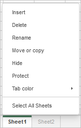

Upravljanje listovima
Podrazumevano, novokreirana tabela ima samo jedan list. Najjednostavniji način da dodate novi list u Uređivač tabela jeste da kliknete na dugme Plus koje se nalazi desno od dugmadi za Navigaciju listovima u levom donjem uglu.
Drugi način da dodate novi list je sledeći:
- kliknite desnim tasterom miša na karticu lista posle koje želite da umetnete novi list,
- izaberite opciju Umetni iz menija desnog klika.
Novi list će biti umetnut posle izabranog.
Da biste aktivirali željeni list, koristite kartice listova u levom donjem uglu svake tabele.
Napomena: ako imate mnogo listova, možete pronaći potrebni pomoću dugmadi za Navigaciju listovima koja se nalaze u levom donjem uglu.
Da biste obrisali nepotreban list:
- kliknite desnim tasterom miša na karticu lista koji želite da obrišete,
- izaberite opciju Obriši iz menija desnog klika.
Izabrani list će biti obrisan iz trenutne tabele.
Da biste preimenovali postojeći list:
- kliknite desnim tasterom miša na karticu lista koji želite da preimenujete,
- izaberite opciju Preimenuj iz menija desnog klika,
- unesite Naziv lista u dijalog prozoru i kliknite na OK.
Naziv izabranog lista će biti promenjen.
Da biste kopirali postojeći list:
- kliknite desnim tasterom miša na karticu lista koji želite da kopirate,
- izaberite opciju Kopiraj iz menija desnog klika,
- izaberite list ispred kog želite da umetnete kopiju ili koristite opciju Kopiraj na kraj da biste umetnuli kopirani list posle svih postojećih,
-
kliknite na dugme OK da biste potvrdili izbor.
ili
pritisnite i držite taster CTRL i prevucite karticu lista udesno da biste ga duplirali i premestili kopiju na željenu lokaciju.
Izabrani list će biti kopiran i umetnut na izabrano mesto.
Da biste premestili postojeći list:
- kliknite desnim tasterom miša na karticu lista koji želite da premestite,
- izaberite opciju Premesti ili kopiraj iz menija desnog klika,
- izaberite želenu radnu svesku koristeći padajući meni Tabela,
- izaberite list ispred kog želite da umetnete izabrani list ili koristite opciju Premesti na kraj da biste premestili izabrani list posle svih postojećih,
- označite polje za potvrdu Napravi kopiju ako želite da napravite kopiju premestenog lista,
- kliknite na dugme OK da biste potvrdili izbor.
Ili jednostavno prevucite potrebnu karticu lista i spustite je na novu lokaciju. Izabrani list će biti premešten.
Takođe možete ručno prevući i pustiti list iz jedne radne sveske u drugu. Da biste to uradili, izaberite list koji želite da premestite i prevucite ga na traku sa listovima druge radne sveske. Na primer, možete prevući list iz radne sveske u onlajn uređivaču u desktop uređivač:

U ovom slučaju, list iz originalne tabele će biti obrisan.
Trenutno nije moguće prevući i pustiti listove u novu radnu svesku u Desktop Editors na Linux-u.
Ako imate mnogo listova, možete sakriti neke od njih koje vam nisu potrebne kako biste olakšali rad. Da biste to uradili,
- kliknite desnim tasterom miša na karticu lista koji želite da sakrijete,
- izaberite opciju Sakrij iz menija desnog klika,
Da biste prikazali karticu skrivenog lista, kliknite desnim tasterom miša na bilo koju karticu lista, otvorite listu Skriveno i izaberite karticu lista koju želite da prikažete.
Da biste razlikovali listove, možete dodeliti različite boje karticama listova. Da biste to uradili,
- kliknite desnim tasterom miša na karticu lista koji želite da obojite,
- izaberite opciju Boja kartice iz menija desnog klika,
- izaberite bilo koju boju iz dostupnih paleta

- Boje teme – boje koje odgovaraju izabranoj šemi boja tabele.
- Standardne boje – podrazumevani skup boja.
- Prilagođena boja – kliknite na ovaj natpis ako u dostupnim paletama ne postoji potrebna boja. Izaberite odgovarajući opseg boja pomeranjem vertikalnog klizača boja i zatim odredite konkretnu boju prevlačenjem birača boja unutar velikog kvadratnog polja boja. Kada izaberete boju pomoću birača boja, odgovarajuće RGB i sRGB vrednosti boje biće prikazane u poljima sa desne strane. Takođe možete odrediti boju na osnovu RGB modela boja unosom potrebnih numeričkih vrednosti u polja R, G, B (crvena, zelena, plava) ili uneti sRGB heksadecimalni kod u polje označeno znakom #. Izabrana boja će se prikazati u polju za pregled Novo. Ako je objekat prethodno bio popunjen nekom prilagođenom bojom, ta boja se prikazuje u polju Trenutno, tako da možete uporediti originalne i izmenjene boje. Kada je boja određena, kliknite na dugme Dodaj:

Prilagođena boja će biti primenjena na izabranu karticu i dodata u paletu Prilagođene boje.
Možete raditi sa više listova istovremeno:
- izaberite prvi list koji želite da uključite u grupu,
- pritisnite i držite taster Shift da biste izabrali nekoliko susednih listova koje želite da grupišete ili koristite taster Ctrl da biste izabrali nekoliko nesusednih listova koje želite da grupišete,
- kliknite desnim tasterom miša na karticu jednog od izabranih listova da biste otvorili kontekstni meni,
- izaberite potrebnu opciju iz menija:

- Umetni – za umetanje istog broja novih praznih listova kao u izabranoj grupi,
- Obriši – za brisanje svih izabranih listova odjednom (ne možete obrisati sve listove u radnoj svesci, jer radna sveska mora da sadrži najmanje jedan vidljiv list),
- Preimenuj – ovu opciju je moguće primeniti samo na svaki list zasebno,
- Kopiraj – za kreiranje kopija svih izabranih listova odjednom i njihovo umetanje na izabrano mesto,
- Premesti – za premeštanje svih izabranih listova odjednom i njihovo umetanje na izabrano mesto,
- Sakrij – za sakrivanje svih izabranih listova odjednom (ne možete sakriti sve listove u radnoj svesci, jer radna sveska mora da sadrži najmanje jedan vidljiv list),
- Boja kartice – za dodeljivanje iste boje svim izabranim karticama listova odjednom,
- Izaberi sve listove – za izbor svih listova u trenutnoj radnoj svesci,
- Razgrupiši listove – za razgrupisanje izabranih listova.
listove je takođe moguće razgrupisati dvoklikom na list koji je uključen u grupu ili klikom na bilo koji list koji nije uključen u grupu.